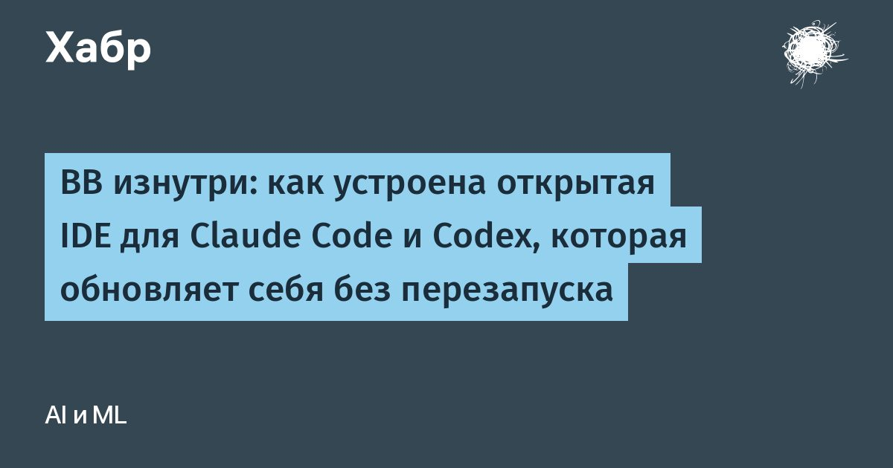

BB изнутри: как устроена открытая IDE для Claude Code и Codex, которая обновляет себя без перезапуска
BB - это открытая программа под лицензией MIT, в которой Claude Code, Codex, Pi и ACP-агенты работают в одном окне.
За 7 месяцев репозиторий собрал около 4 тысяч звёзд.
Главное в BB не окно, а то, что его интерфейс достраивается плагинами и новый плагин подхватывается без перезапуска программы.Недавно я снимал про BB ролик.
Там агент за 20 минут и два промпта собрал плагин, который расшифровывает запись созвона, выделяет договорённости со сроками и пишет письмо клиенту.
Ролик был про то, что это даёт пользователю, а в этой статье я разберу код и покажу, за счёт чего это работает.
Всё ниже проверено по репозиторию get-bb/bb по состоянию на конец сентября 2026.
Читать далее